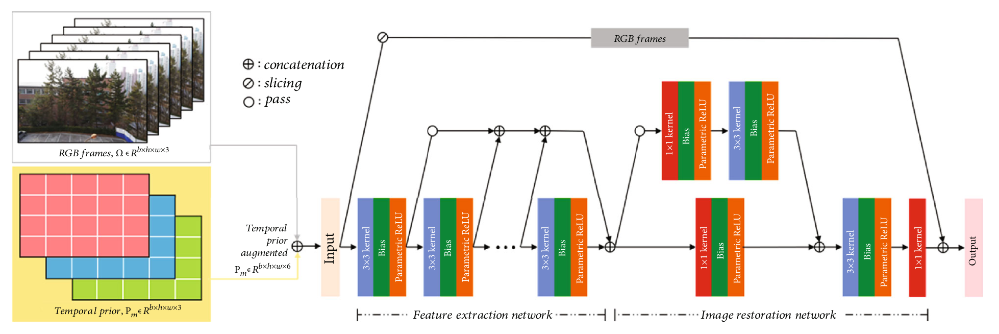
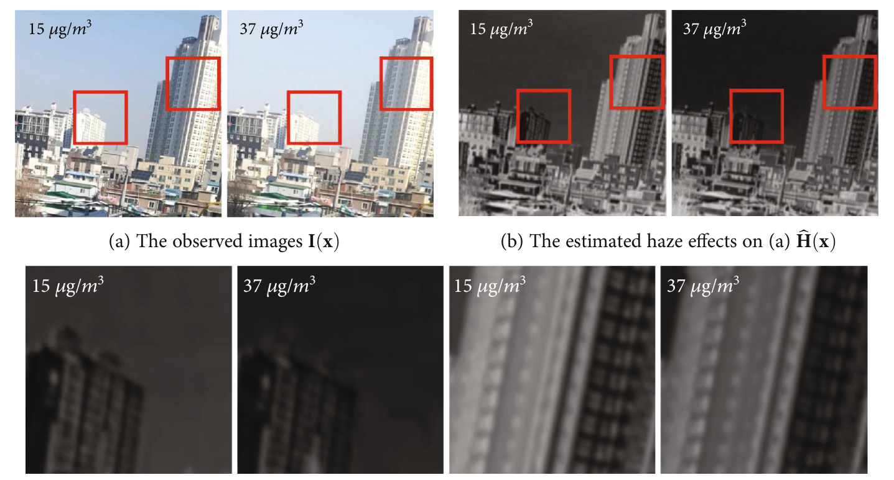
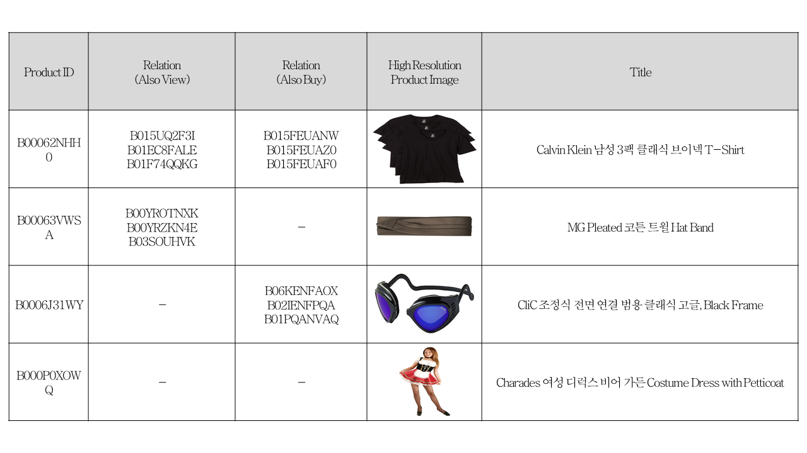
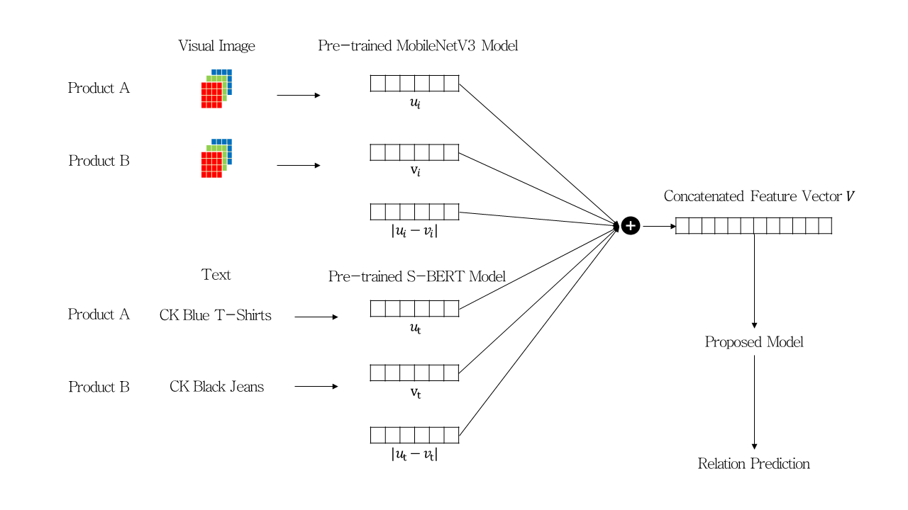
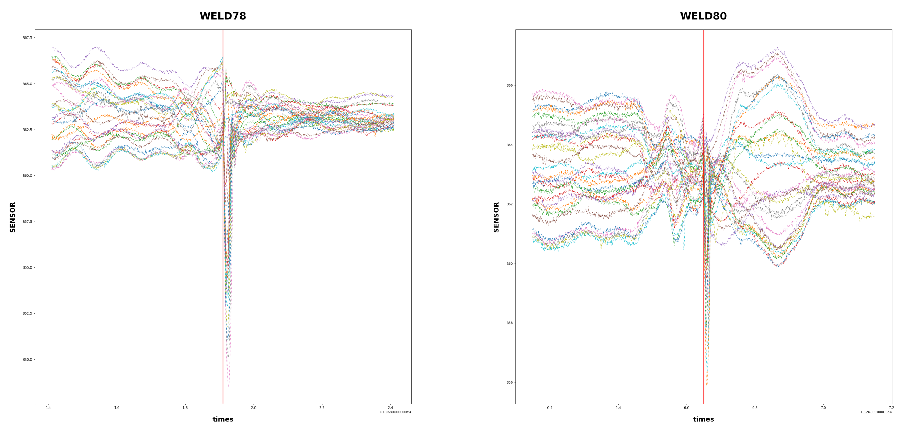
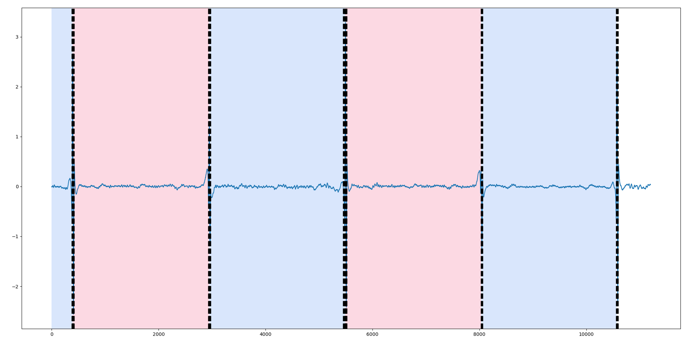
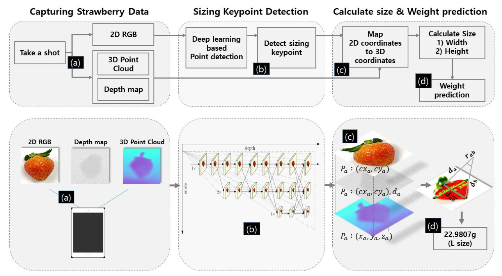
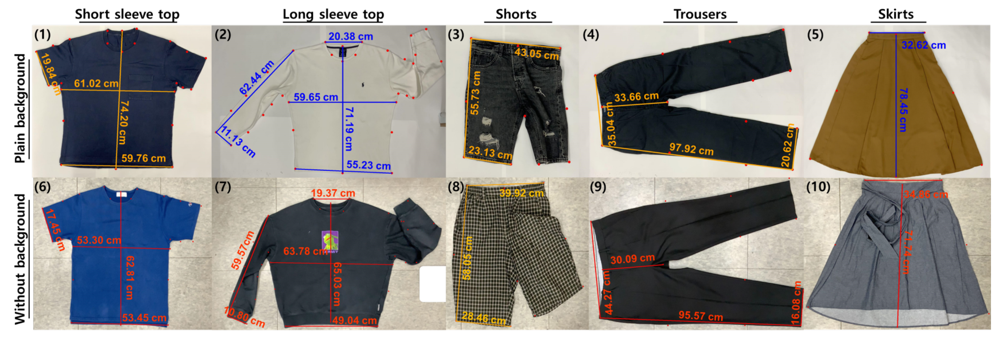
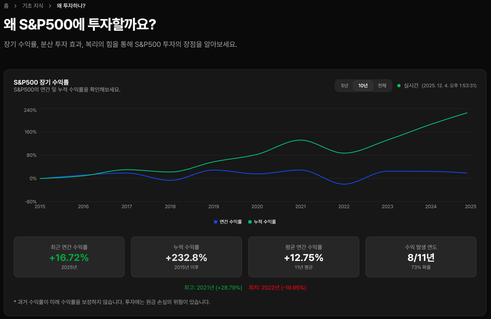

데이터 수집 및 전처리 | 모델 학습 및 평가 | 모델 고도화
Raspberry Pi | Python | OpenCV
문제 상황
-
고비용 및 관측 사각지대: 국가 측정망(TEOM 등)은
정확하나 설치·유지비가 비싸고, 공간 제약으로 관측 사각지대가
발생함
-
보급형 센서의 유지관리 한계: 저가형 광산란
센서는 넓은 범위를 커버하기 위해 많은 유지관리 비용이 들고
신뢰성 확보가 어려움
-
기존 영상 기술의 낮은 예측력: 단일 이미지만
분석하여 시공간적 정보를 활용하지 못하고 움직임 등에 취약함
-
낮은 연산 효율성: 심층 신경망 모델은 파라미터가
너무 많아 연산 비용이 높고 비효율적임
해결 방법 및 성과
-
시계열 딥러닝 모델 적용: 연속된 영상
프레임(Temporal Prior)을 활용해 미세먼지의 흐름과 변동성을
포착하는 모델 개발
-
차분 연산 및 통계 분석: 프레임 간 광도 변화를
수치화하고 이동평균, PLS-DA 등의 통계량으로 농도를 예측
-
저비용 실시간 시스템 구축: 라즈베리 파이를
활용해 비용을 낮추고, 15초 이내 분석 가능한 실시간 솔루션 구현
-
높은 정확도 달성: 실내 약 86%, 실외 약 82%의
정확도와 오차 범위 25% 이내의 성능 확보


데이터 수집 및 전처리 | 모델 학습 및 평가 | 모델 고도화 | 논문 작성
Python | PyTorch | MobileNetV3 | Sentence-BERT | Amazon Fashion
Meta-data
문제 상황
-
단일 데이터의 한계: 이미지나 텍스트 중 하나만
사용 시 예측 정확도 확보가 어려움
-
모바일 환경 연산 제약: 기존 심층 CNN 모델은
모바일 기기에서 구동하기에 연산 부담이 큼
-
다국어 처리 문제: 영어와 한국어가 혼합된
메타데이터에서 효과적인 특징 추출이 필요함
-
선호도 파악 난해: 단순 필터링으로는 고객의
숨겨진 선호 패턴을 분석하기 어려움
해결 방법 및 성과
-
통합 분석 모델 구축: 이미지와 텍스트 특징을
결합(Concatenate)하여 상품 관계 예측 모델 개발
-
효율적 이미지 처리: MobileNetV3를 활용해 적은
연산량으로 이미지 특징 추출
-
다국어 처리 성능 입증: 한/영 혼합 데이터에서도
언어별 모델 분리 시 80% 이상의 정확도 확보
-
추천 시스템 가능성 확인: 상품 간 관계 학습을
통해 사용자 맞춤형 추천 시스템 구현 가능성 확인


데이터 전처리 | 파생변수 생성 | 모델 학습 및 평가 | 모델 고도화 | 패키징
Python | Random Forest | LightGBM | YOLO | Sensor Data
문제 상황
-
자동화 시스템: 센서 데이터만으로 WELD(접합부),
BEND(만곡부) 구간 탐지 자동화에 한계
-
MLP 성능 한계: 입력 크기 고정 제약으로 인해
정확도가 0.18~0.34로 저조함
-
이상 구간(Anomaly) 모호성: 비정상 구간과 유사한
패턴이 많아 오탐 발생
-
데이터 불균형: 특징 구간보다 일반 구간이
압도적으로 많아 학습 어려움
해결 방법 및 성과
-
트리 기반 모델 및 파생 변수 도입: 성능이 낮은
MLP 대신 Random Forest 등 트리 모델로 전환하고, Raw 데이터 대신
분산(Variance), 최대-최소 차이(Max-Min), 행 간 차이 등 7~14개의
파생 변수를 생성하여 학습에 활용함
-
예측 정확도 향상: 파생 변수를 적용한 Random
Forest 모델을 통해 접합부 예측 정확도를 약 0.87까지
끌어올렸으며, 연속된 예측 결과를 후처리하여 구간을 보정함
-
만곡부 높은 예측 성능 달성: 접합부와 접합부
사이 구간을 만곡부 후보로 정의하고 LGBM 모델을 적용한 결과
0.98의 매우 높은 정확도를 달성함


데이터 수집 및 전처리 | 모델 학습 및 평가 | 모델 고도화 | 논문 작성
Mobile LiDAR | 3D Point Cloud | Python | PyTorch | HRNet | YOLO
문제 상황
-
2D 비전 한계: 단순 이미지는 거리 정보가 없어
실제 크기 측정 시 별도 참조물이 필요함
-
환경 통제 제약: 기존 방식은 카메라 거리, 조명,
배경 등을 엄격히 통제해야 해 실용성이 낮음
-
수동 측정 비효율: 줄자나 저울을 이용한 수동
측정은 시간이 오래 걸리고 인적 오차가 발생함
-
기존 3D 모델 한계: 고성능 장비가 필요하거나
연산이 느려 모바일 실시간 적용이 어려움
-
객체 형태 복잡성: 의류 주름, 딸기 모양, 다양한
인체 포즈 등을 단순 알고리즘으로 측정하기 난해함
-
깊이 정보 불일치: 2D 이미지의 키포인트가 실제
3D 공간의 경계와 일치하지 않아 오차 발생
해결 방법 및 성과
-
2D-3D 좌표 매핑: 딥러닝 키포인트와 LiDAR 거리
정보를 결합해 참조물 없이 정밀 측정 구현
-
키포인트 보정 기술: 깊이 맵의 경계선(Edge)을
활용해 키포인트를 실제 객체 외곽으로 보정, 정밀도 향상
-
높은 측정 정확도: 의류(오차 ~2%), 딸기(오차
~4-5%), 신체(주요 부위 오차 <4%) 모두 높은 정확도 달성
-
속성 예측 모델: 길이 데이터를 기반으로 딸기
무게(오차 ~10%) 및 신체 둘레를 정밀하게 추정하는 회귀식 개발
-
환경 강건성 확보: 배경, 조명, 객체 회전이나
구겨짐 등 다양한 환경 변수에도 일관된 성능 입증
-
모바일 실시간 처리: 복잡한 3D 복원 없이 빠른
연산으로 모바일 기기에서 실시간 측정 구현


Next.js | TypeScript | Tailwind CSS | Finance Data | Redis | Docker |
Python
동기와 목표
- 주식 초보자 입장에서 쉽게 입문할 수 있는 주식 소개
- 가장 대표적인 S&P500 ETF를 소개하고자 함
- 투자를 일종의 도박으로 생각하는 '투자장벽'을 깨고자 함
-
자연스럽게 장기투자를 유도하고, ISA, IRP를 활용한 절세 전략을
추천하고자 함
구현
- Next.js 기반의 현대적 프론트엔드 설계 및 구현
-
최신 데이터 업데이트를 위한 Python 기반의 FastAPI 백엔드 구현
- Redis를 활용한 캐싱 구현
- GitHub 페이지에 배포하기 위한 Cloudflare Tunnel 연결
- Deploy to GitHub Pages
